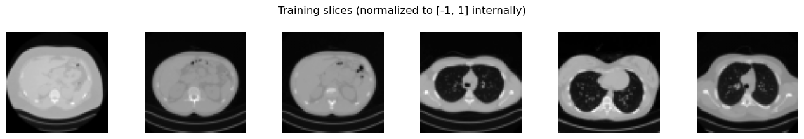
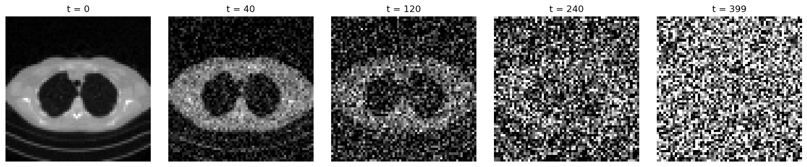
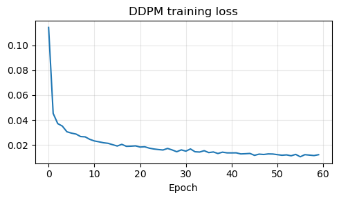
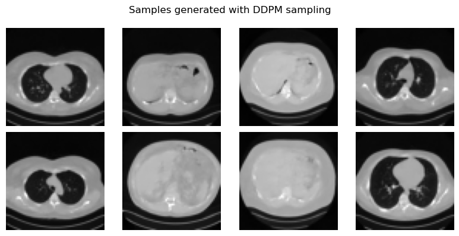
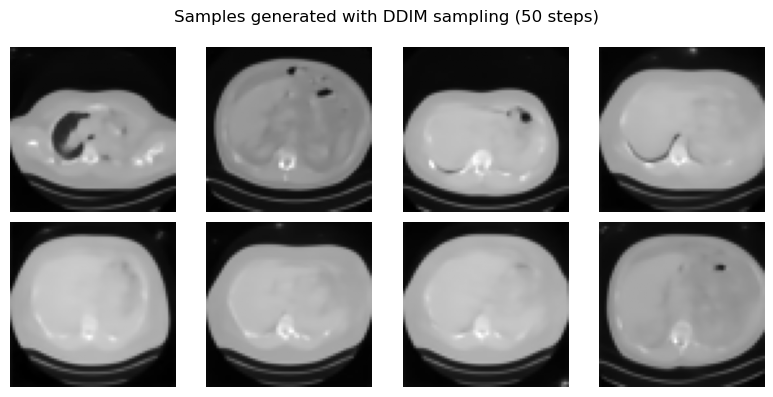

Diffusion Models: DDPM and DDIM#
VAEs and GANs are historically fundamental, but modern generative modeling is dominated by a third family: diffusion models. These models generate data by learning how to reverse a gradual noising process. In practice, they have become extremely successful because they combine high sample quality, relative training stability, and a clear probabilistic interpretation.
This notebook develops the diffusion framework in detail. We first introduce the forward diffusion process, then explain the DDPM training objective and reverse sampling procedure, and finally show how DDIM modifies the sampling stage to obtain much faster generation from the same trained model.
As in the previous notebook, the focus remains practical. We train a compact but usable diffusion model on the Mayo slices resized to \(64 \times 64\), save the learned denoiser in ../weights, and generate images with both DDPM and DDIM sampling.
The Forward Diffusion Process#
The central idea is to define a sequence of latent variables
where \(\boldsymbol{x}_0\) is a clean image sampled from the data distribution and the later variables are progressively noisier. In the standard DDPM construction, the forward process is Markovian and Gaussian:
where \(\alpha_t = 1 - \beta_t\) and the numbers \(\beta_t \in (0,1)\) form the noise schedule.
A crucial simplification is that one can sample \(\boldsymbol{x}_t\) directly from \(\boldsymbol{x}_0\) without simulating all intermediate steps. If
then
and therefore
This formula is the workhorse of diffusion training: for a random timestep \(t\), we can corrupt a clean image analytically and ask the neural network to predict the noise that was used.
Note
Diffusion training does not require one network for each noise level. A single time-conditioned neural network is trained to solve many denoising problems at once.
import glob
import sys
from pathlib import Path
import matplotlib.pyplot as plt
import torch
import torch.nn.functional as F
from PIL import Image
from torch import nn
from torch.utils.data import DataLoader, Dataset
from torchvision import transforms
from tqdm.auto import tqdm
book_root = Path('..').resolve()
ipp_root = book_root / 'IPPy'
if str(ipp_root) not in sys.path:
sys.path.append(str(ipp_root))
from utilities import get_device
from nn.diffusion import (
DiffusionUNet,
EMA,
cosine_beta_schedule,
ddim_sample,
ddpm_sample,
denormalize_to_01,
extract,
)
weights_dir = book_root / 'weights'
weights_dir.mkdir(exist_ok=True)
class MayoDataset(Dataset):
def __init__(self, data_path, data_shape=64):
super().__init__()
self.fname_list = sorted(glob.glob(f'{data_path}/*/*.png'))
self.transform = transforms.Compose([
transforms.Resize((data_shape, data_shape), antialias=True),
transforms.ToTensor(),
transforms.Normalize((0.5,), (0.5,)),
])
def __len__(self):
return len(self.fname_list)
def __getitem__(self, idx):
x = Image.open(self.fname_list[idx]).convert('L')
return self.transform(x)
device = get_device()
batch_size = 32 if device == 'cuda' else 8
train_dataset = MayoDataset(data_path=str(book_root / 'Mayo' / 'train'), data_shape=64)
test_dataset = MayoDataset(data_path=str(book_root / 'Mayo' / 'test'), data_shape=64)
train_loader = DataLoader(
train_dataset,
batch_size=batch_size,
shuffle=True,
num_workers=0,
pin_memory=(device == 'cuda'),
)
test_loader = DataLoader(
test_dataset,
batch_size=batch_size,
shuffle=False,
num_workers=0,
pin_memory=(device == 'cuda'),
)
def show_batch(batch, title, ncols=6):
images = denormalize_to_01(batch[:ncols]).cpu()
fig, axes = plt.subplots(1, len(images), figsize=(2.2 * len(images), 2.2))
axes = axes if len(images) > 1 else [axes]
for ax, image in zip(axes, images):
ax.imshow(image.squeeze(), cmap='gray')
ax.axis('off')
plt.suptitle(title)
plt.tight_layout()
plt.show()
print('Device:', device)
print('Training images:', len(train_dataset))
print('Test images:', len(test_dataset))
print('Weights directory:', weights_dir)
sample_batch = next(iter(train_loader))
show_batch(sample_batch, 'Training slices (normalized to [-1, 1] internally)')
Device: cuda
Training images: 3306
Test images: 327
Weights directory: C:\Users\tivog\computational-imaging\years\2025-26\weights

def make_beta_schedule(num_steps):
return cosine_beta_schedule(num_steps)
num_diffusion_steps = 400
betas = make_beta_schedule(num_diffusion_steps)
alphas = 1.0 - betas
alpha_bars = torch.cumprod(alphas, dim=0)
x0 = test_dataset[0].unsqueeze(0)
steps_to_show = [0, 40, 120, 240, 399]
fig, axes = plt.subplots(1, len(steps_to_show), figsize=(15, 3))
for ax, step in zip(axes, steps_to_show):
t = torch.tensor([step], dtype=torch.long)
noise = torch.randn_like(x0)
x_t = extract(alpha_bars.sqrt(), t, x0.shape) * x0 + extract((1 - alpha_bars).sqrt(), t, x0.shape) * noise
ax.imshow(denormalize_to_01(x_t).squeeze(), cmap='gray')
ax.set_title(f't = {step}')
ax.axis('off')
plt.tight_layout()
plt.show()

The figure above contains the full intuition of diffusion modeling. For small timesteps, the image is only mildly perturbed; for large timesteps, it becomes almost indistinguishable from Gaussian noise. The learning problem is therefore: given \((\boldsymbol{x}_t, t)\), predict enough information to reverse this corruption process.
In Denoising Diffusion Probabilistic Models (DDPM), the reverse process is parameterized by a neural network that predicts the noise component in \(\boldsymbol{x}_t\). If the model is denoted by \(\boldsymbol{\varepsilon}_\Theta(\boldsymbol{x}_t, t)\), then training minimizes
where
This simple MSE loss is one of the key reasons diffusion models are practical. In the original DDPM derivation it appears as a particularly convenient surrogate for a variational objective, and in score-based language it is closely related to learning the score field of noisy data. For the purposes of this course, the important point is operational: once the network can predict the injected noise accurately across many timesteps, it contains enough information to run a reverse denoising process.
One of the most elegant aspects of DDPMs is that the model is not asked to generate an image directly. Instead, it learns a family of denoising tasks across many noise levels. From the network output, one can reconstruct an estimate of the clean image via
model = DiffusionUNet(
in_ch=1,
base_ch=64,
channel_mults=(1, 2, 4),
time_dim=256,
dropout=0.05,
attn_levels=(1, 2),
)
num_params = sum(param.numel() for param in model.parameters())
print(model)
print(f'Trainable parameters: {num_params / 1e6:.2f}M')
DiffusionUNet(
(init): Conv2d(1, 64, kernel_size=(3, 3), stride=(1, 1), padding=(1, 1))
(time_mlp): Sequential(
(0): Linear(in_features=256, out_features=1024, bias=True)
(1): SiLU()
(2): Linear(in_features=1024, out_features=256, bias=True)
)
(down_blocks): ModuleList(
(0): ModuleList(
(0-1): 2 x ResBlock(
(norm1): GroupNorm(32, 64, eps=1e-05, affine=True)
(act1): SiLU()
(conv1): Conv2d(64, 64, kernel_size=(3, 3), stride=(1, 1), padding=(1, 1))
(time_proj): Sequential(
(0): SiLU()
(1): Linear(in_features=256, out_features=64, bias=True)
)
(norm2): GroupNorm(32, 64, eps=1e-05, affine=True)
(act2): SiLU()
(dropout): Dropout(p=0.05, inplace=False)
(conv2): Conv2d(64, 64, kernel_size=(3, 3), stride=(1, 1), padding=(1, 1))
(skip): Identity()
)
(2): Identity()
)
(1): ModuleList(
(0): ResBlock(
(norm1): GroupNorm(32, 64, eps=1e-05, affine=True)
(act1): SiLU()
(conv1): Conv2d(64, 128, kernel_size=(3, 3), stride=(1, 1), padding=(1, 1))
(time_proj): Sequential(
(0): SiLU()
(1): Linear(in_features=256, out_features=128, bias=True)
)
(norm2): GroupNorm(32, 128, eps=1e-05, affine=True)
(act2): SiLU()
(dropout): Dropout(p=0.05, inplace=False)
(conv2): Conv2d(128, 128, kernel_size=(3, 3), stride=(1, 1), padding=(1, 1))
(skip): Conv2d(64, 128, kernel_size=(1, 1), stride=(1, 1))
)
(1): ResBlock(
(norm1): GroupNorm(32, 128, eps=1e-05, affine=True)
(act1): SiLU()
(conv1): Conv2d(128, 128, kernel_size=(3, 3), stride=(1, 1), padding=(1, 1))
(time_proj): Sequential(
(0): SiLU()
(1): Linear(in_features=256, out_features=128, bias=True)
)
(norm2): GroupNorm(32, 128, eps=1e-05, affine=True)
(act2): SiLU()
(dropout): Dropout(p=0.05, inplace=False)
(conv2): Conv2d(128, 128, kernel_size=(3, 3), stride=(1, 1), padding=(1, 1))
(skip): Identity()
)
(2): SelfAttention2d(
(norm): GroupNorm(32, 128, eps=1e-05, affine=True)
(attn): MultiheadAttention(
(out_proj): NonDynamicallyQuantizableLinear(in_features=128, out_features=128, bias=True)
)
)
)
(2): ModuleList(
(0): ResBlock(
(norm1): GroupNorm(32, 128, eps=1e-05, affine=True)
(act1): SiLU()
(conv1): Conv2d(128, 256, kernel_size=(3, 3), stride=(1, 1), padding=(1, 1))
(time_proj): Sequential(
(0): SiLU()
(1): Linear(in_features=256, out_features=256, bias=True)
)
(norm2): GroupNorm(32, 256, eps=1e-05, affine=True)
(act2): SiLU()
(dropout): Dropout(p=0.05, inplace=False)
(conv2): Conv2d(256, 256, kernel_size=(3, 3), stride=(1, 1), padding=(1, 1))
(skip): Conv2d(128, 256, kernel_size=(1, 1), stride=(1, 1))
)
(1): ResBlock(
(norm1): GroupNorm(32, 256, eps=1e-05, affine=True)
(act1): SiLU()
(conv1): Conv2d(256, 256, kernel_size=(3, 3), stride=(1, 1), padding=(1, 1))
(time_proj): Sequential(
(0): SiLU()
(1): Linear(in_features=256, out_features=256, bias=True)
)
(norm2): GroupNorm(32, 256, eps=1e-05, affine=True)
(act2): SiLU()
(dropout): Dropout(p=0.05, inplace=False)
(conv2): Conv2d(256, 256, kernel_size=(3, 3), stride=(1, 1), padding=(1, 1))
(skip): Identity()
)
(2): SelfAttention2d(
(norm): GroupNorm(32, 256, eps=1e-05, affine=True)
(attn): MultiheadAttention(
(out_proj): NonDynamicallyQuantizableLinear(in_features=256, out_features=256, bias=True)
)
)
)
)
(downsamples): ModuleList(
(0): Downsample(
(conv): Conv2d(64, 64, kernel_size=(3, 3), stride=(2, 2), padding=(1, 1))
)
(1): Downsample(
(conv): Conv2d(128, 128, kernel_size=(3, 3), stride=(2, 2), padding=(1, 1))
)
)
(mid_block1): ResBlock(
(norm1): GroupNorm(32, 256, eps=1e-05, affine=True)
(act1): SiLU()
(conv1): Conv2d(256, 256, kernel_size=(3, 3), stride=(1, 1), padding=(1, 1))
(time_proj): Sequential(
(0): SiLU()
(1): Linear(in_features=256, out_features=256, bias=True)
)
(norm2): GroupNorm(32, 256, eps=1e-05, affine=True)
(act2): SiLU()
(dropout): Dropout(p=0.05, inplace=False)
(conv2): Conv2d(256, 256, kernel_size=(3, 3), stride=(1, 1), padding=(1, 1))
(skip): Identity()
)
(mid_attn): SelfAttention2d(
(norm): GroupNorm(32, 256, eps=1e-05, affine=True)
(attn): MultiheadAttention(
(out_proj): NonDynamicallyQuantizableLinear(in_features=256, out_features=256, bias=True)
)
)
(mid_block2): ResBlock(
(norm1): GroupNorm(32, 256, eps=1e-05, affine=True)
(act1): SiLU()
(conv1): Conv2d(256, 256, kernel_size=(3, 3), stride=(1, 1), padding=(1, 1))
(time_proj): Sequential(
(0): SiLU()
(1): Linear(in_features=256, out_features=256, bias=True)
)
(norm2): GroupNorm(32, 256, eps=1e-05, affine=True)
(act2): SiLU()
(dropout): Dropout(p=0.05, inplace=False)
(conv2): Conv2d(256, 256, kernel_size=(3, 3), stride=(1, 1), padding=(1, 1))
(skip): Identity()
)
(up_blocks): ModuleList(
(0): ModuleList(
(0): ResBlock(
(norm1): GroupNorm(32, 512, eps=1e-05, affine=True)
(act1): SiLU()
(conv1): Conv2d(512, 256, kernel_size=(3, 3), stride=(1, 1), padding=(1, 1))
(time_proj): Sequential(
(0): SiLU()
(1): Linear(in_features=256, out_features=256, bias=True)
)
(norm2): GroupNorm(32, 256, eps=1e-05, affine=True)
(act2): SiLU()
(dropout): Dropout(p=0.05, inplace=False)
(conv2): Conv2d(256, 256, kernel_size=(3, 3), stride=(1, 1), padding=(1, 1))
(skip): Conv2d(512, 256, kernel_size=(1, 1), stride=(1, 1))
)
(1): ResBlock(
(norm1): GroupNorm(32, 256, eps=1e-05, affine=True)
(act1): SiLU()
(conv1): Conv2d(256, 256, kernel_size=(3, 3), stride=(1, 1), padding=(1, 1))
(time_proj): Sequential(
(0): SiLU()
(1): Linear(in_features=256, out_features=256, bias=True)
)
(norm2): GroupNorm(32, 256, eps=1e-05, affine=True)
(act2): SiLU()
(dropout): Dropout(p=0.05, inplace=False)
(conv2): Conv2d(256, 256, kernel_size=(3, 3), stride=(1, 1), padding=(1, 1))
(skip): Identity()
)
(2): SelfAttention2d(
(norm): GroupNorm(32, 256, eps=1e-05, affine=True)
(attn): MultiheadAttention(
(out_proj): NonDynamicallyQuantizableLinear(in_features=256, out_features=256, bias=True)
)
)
)
(1): ModuleList(
(0): ResBlock(
(norm1): GroupNorm(32, 384, eps=1e-05, affine=True)
(act1): SiLU()
(conv1): Conv2d(384, 128, kernel_size=(3, 3), stride=(1, 1), padding=(1, 1))
(time_proj): Sequential(
(0): SiLU()
(1): Linear(in_features=256, out_features=128, bias=True)
)
(norm2): GroupNorm(32, 128, eps=1e-05, affine=True)
(act2): SiLU()
(dropout): Dropout(p=0.05, inplace=False)
(conv2): Conv2d(128, 128, kernel_size=(3, 3), stride=(1, 1), padding=(1, 1))
(skip): Conv2d(384, 128, kernel_size=(1, 1), stride=(1, 1))
)
(1): ResBlock(
(norm1): GroupNorm(32, 128, eps=1e-05, affine=True)
(act1): SiLU()
(conv1): Conv2d(128, 128, kernel_size=(3, 3), stride=(1, 1), padding=(1, 1))
(time_proj): Sequential(
(0): SiLU()
(1): Linear(in_features=256, out_features=128, bias=True)
)
(norm2): GroupNorm(32, 128, eps=1e-05, affine=True)
(act2): SiLU()
(dropout): Dropout(p=0.05, inplace=False)
(conv2): Conv2d(128, 128, kernel_size=(3, 3), stride=(1, 1), padding=(1, 1))
(skip): Identity()
)
(2): SelfAttention2d(
(norm): GroupNorm(32, 128, eps=1e-05, affine=True)
(attn): MultiheadAttention(
(out_proj): NonDynamicallyQuantizableLinear(in_features=128, out_features=128, bias=True)
)
)
)
(2): ModuleList(
(0): ResBlock(
(norm1): GroupNorm(32, 192, eps=1e-05, affine=True)
(act1): SiLU()
(conv1): Conv2d(192, 64, kernel_size=(3, 3), stride=(1, 1), padding=(1, 1))
(time_proj): Sequential(
(0): SiLU()
(1): Linear(in_features=256, out_features=64, bias=True)
)
(norm2): GroupNorm(32, 64, eps=1e-05, affine=True)
(act2): SiLU()
(dropout): Dropout(p=0.05, inplace=False)
(conv2): Conv2d(64, 64, kernel_size=(3, 3), stride=(1, 1), padding=(1, 1))
(skip): Conv2d(192, 64, kernel_size=(1, 1), stride=(1, 1))
)
(1): ResBlock(
(norm1): GroupNorm(32, 64, eps=1e-05, affine=True)
(act1): SiLU()
(conv1): Conv2d(64, 64, kernel_size=(3, 3), stride=(1, 1), padding=(1, 1))
(time_proj): Sequential(
(0): SiLU()
(1): Linear(in_features=256, out_features=64, bias=True)
)
(norm2): GroupNorm(32, 64, eps=1e-05, affine=True)
(act2): SiLU()
(dropout): Dropout(p=0.05, inplace=False)
(conv2): Conv2d(64, 64, kernel_size=(3, 3), stride=(1, 1), padding=(1, 1))
(skip): Identity()
)
(2): Identity()
)
)
(upsamples): ModuleList(
(0): Upsample(
(conv): Conv2d(256, 256, kernel_size=(3, 3), stride=(1, 1), padding=(1, 1))
)
(1): Upsample(
(conv): Conv2d(128, 128, kernel_size=(3, 3), stride=(1, 1), padding=(1, 1))
)
)
(out_norm): GroupNorm(32, 64, eps=1e-05, affine=True)
(out_act): SiLU()
(out_conv): Conv2d(64, 1, kernel_size=(3, 3), stride=(1, 1), padding=(1, 1))
)
Trainable parameters: 12.36M
The code below implements a practical DDPM training loop rather than the smallest possible pedagogical example. At each iteration we load a clean image \(\boldsymbol{x}_0\), sample a random timestep \(t\), sample Gaussian noise \(\boldsymbol{\varepsilon}\), form the noisy image \(\boldsymbol{x}_t\) analytically, and then train the network to predict \(\boldsymbol{\varepsilon}\) from \((\boldsymbol{x}_t, t)\). The implementation uses a stronger time-conditioned UNet, EMA averaging, checkpoint resume, gradient clipping, and mixed precision on CUDA so that longer training runs are actually worth keeping.
Note
The notebook now keeps an epoch checkpoint in ../weights/DDPMDenoiser.ckpt and stores the EMA denoiser in ../weights/DDPMDenoiser.pth. This same EMA network is then reused for both DDPM and DDIM sampling.
torch.manual_seed(0)
target_epochs = 60
learning_rate = 2e-4
weight_decay = 1e-4
ema_decay = 0.9995
grad_clip = 1.0
force_restart = False
model = DiffusionUNet(
in_ch=1,
base_ch=64,
channel_mults=(1, 2, 4),
time_dim=256,
dropout=0.05,
attn_levels=(1, 2),
).to(device)
ema = EMA(model, decay=ema_decay)
optimizer = torch.optim.AdamW(model.parameters(), lr=learning_rate, weight_decay=weight_decay)
scheduler = torch.optim.lr_scheduler.CosineAnnealingLR(optimizer, T_max=target_epochs)
scaler = torch.cuda.amp.GradScaler(enabled=(device == 'cuda'))
autocast_device = 'cuda' if device == 'cuda' else 'cpu'
history = []
start_epoch = 0
best_loss = float('inf')
weights_path = weights_dir / 'DDPMDenoiser.pth'
raw_weights_path = weights_dir / 'DDPMDenoiser_raw.pth'
checkpoint_path = weights_dir / 'DDPMDenoiser.ckpt'
if checkpoint_path.exists() and not force_restart:
try:
checkpoint = torch.load(checkpoint_path, map_location='cpu')
model.load_state_dict(checkpoint['model'])
ema.load_state_dict(checkpoint['ema'])
optimizer.load_state_dict(checkpoint['optimizer'])
scheduler.load_state_dict(checkpoint['scheduler'])
scaler.load_state_dict(checkpoint['scaler'])
for state in optimizer.state.values():
for key, value in state.items():
if isinstance(value, torch.Tensor):
state[key] = value.to(device)
history = checkpoint.get('history', [])
start_epoch = checkpoint.get('epoch', -1) + 1
best_loss = checkpoint.get('best_loss', float('inf'))
print(f'Resuming diffusion training from epoch {start_epoch + 1}.')
except Exception as exc:
print(f'Ignoring incompatible checkpoint: {exc}')
start_epoch = 0
history = []
best_loss = float('inf')
elif weights_path.exists() and not force_restart:
try:
ema_state = torch.load(weights_path, map_location='cpu')
model.load_state_dict(ema_state)
ema.shadow.load_state_dict(ema_state)
start_epoch = target_epochs
history = []
print(f'Found existing EMA weights at {weights_path}. Skipping training.')
except Exception as exc:
print(f'Ignoring incompatible EMA weights: {exc}')
start_epoch = 0
history = []
best_loss = float('inf')
else:
print('Starting diffusion training from scratch.')
for epoch in range(start_epoch, target_epochs):
model.train()
epoch_loss = 0.0
progress_bar = tqdm(train_loader, desc=f'DDPM epoch {epoch + 1}/{target_epochs}', leave=True)
for step, x0_batch in enumerate(progress_bar, start=1):
x0_batch = x0_batch.to(device, non_blocking=(device == 'cuda'))
t = torch.randint(0, num_diffusion_steps, (x0_batch.shape[0],), device=device)
noise = torch.randn_like(x0_batch)
x_t = extract(alpha_bars.sqrt(), t, x0_batch.shape) * x0_batch + extract((1 - alpha_bars).sqrt(), t, x0_batch.shape) * noise
optimizer.zero_grad(set_to_none=True)
with torch.autocast(device_type=autocast_device, dtype=torch.float16, enabled=(device == 'cuda')):
noise_pred = model(x_t, t)
loss = F.mse_loss(noise_pred, noise)
scaler.scale(loss).backward()
scaler.unscale_(optimizer)
nn.utils.clip_grad_norm_(model.parameters(), grad_clip)
scaler.step(optimizer)
scaler.update()
ema.update(model)
epoch_loss += loss.item()
progress_bar.set_postfix(loss=f'{loss.item():.5f}', avg=f'{epoch_loss / step:.5f}')
epoch_loss /= len(train_loader)
history.append(epoch_loss)
scheduler.step()
if epoch_loss < best_loss:
best_loss = epoch_loss
torch.save(model.state_dict(), raw_weights_path)
torch.save(ema.shadow.state_dict(), weights_path)
checkpoint = {
'epoch': epoch,
'model': model.state_dict(),
'ema': ema.state_dict(),
'optimizer': optimizer.state_dict(),
'scheduler': scheduler.state_dict(),
'scaler': scaler.state_dict(),
'history': history,
'best_loss': best_loss,
'config': {
'target_epochs': target_epochs,
'learning_rate': learning_rate,
'weight_decay': weight_decay,
'ema_decay': ema_decay,
'grad_clip': grad_clip,
'num_diffusion_steps': num_diffusion_steps,
},
}
torch.save(checkpoint, checkpoint_path)
if not weights_path.exists():
torch.save(ema.shadow.state_dict(), weights_path)
sample_model = DiffusionUNet(
in_ch=1,
base_ch=64,
channel_mults=(1, 2, 4),
time_dim=256,
dropout=0.05,
attn_levels=(1, 2),
).to(device)
sample_model.load_state_dict(torch.load(weights_path, map_location='cpu'))
sample_model.eval()
if history:
plt.figure(figsize=(5, 3))
plt.plot(history)
plt.title('DDPM training loss')
plt.xlabel('Epoch')
plt.grid(alpha=0.3)
plt.tight_layout()
plt.show()
C:\Users\tivog\AppData\Local\Temp\ipykernel_17788\1838761955.py:21: FutureWarning: `torch.cuda.amp.GradScaler(args...)` is deprecated. Please use `torch.amp.GradScaler('cuda', args...)` instead.
scaler = torch.cuda.amp.GradScaler(enabled=(device == 'cuda'))
Resuming diffusion training from epoch 14.
DDPM epoch 14/60: 100%|██████████| 104/104 [00:43<00:00, 2.41it/s, avg=0.02125, loss=0.01386]
DDPM epoch 15/60: 100%|██████████| 104/104 [00:42<00:00, 2.47it/s, avg=0.02013, loss=0.01318]
DDPM epoch 16/60: 100%|██████████| 104/104 [00:41<00:00, 2.49it/s, avg=0.01906, loss=0.00867]
DDPM epoch 17/60: 100%|██████████| 104/104 [00:41<00:00, 2.48it/s, avg=0.02042, loss=0.01192]
DDPM epoch 18/60: 100%|██████████| 104/104 [00:42<00:00, 2.47it/s, avg=0.01882, loss=0.04162]
DDPM epoch 19/60: 100%|██████████| 104/104 [00:43<00:00, 2.41it/s, avg=0.01893, loss=0.02971]
DDPM epoch 20/60: 100%|██████████| 104/104 [00:42<00:00, 2.47it/s, avg=0.01919, loss=0.01582]
DDPM epoch 21/60: 100%|██████████| 104/104 [00:41<00:00, 2.48it/s, avg=0.01823, loss=0.03145]
DDPM epoch 22/60: 100%|██████████| 104/104 [00:41<00:00, 2.48it/s, avg=0.01847, loss=0.01909]
DDPM epoch 23/60: 100%|██████████| 104/104 [00:41<00:00, 2.48it/s, avg=0.01735, loss=0.01056]
DDPM epoch 24/60: 100%|██████████| 104/104 [00:42<00:00, 2.43it/s, avg=0.01668, loss=0.01836]
DDPM epoch 25/60: 100%|██████████| 104/104 [00:42<00:00, 2.44it/s, avg=0.01622, loss=0.00448]
DDPM epoch 26/60: 100%|██████████| 104/104 [00:42<00:00, 2.42it/s, avg=0.01586, loss=0.00442]
DDPM epoch 27/60: 100%|██████████| 104/104 [00:42<00:00, 2.44it/s, avg=0.01712, loss=0.03560]
DDPM epoch 28/60: 100%|██████████| 104/104 [00:42<00:00, 2.44it/s, avg=0.01592, loss=0.00814]
DDPM epoch 29/60: 100%|██████████| 104/104 [00:42<00:00, 2.45it/s, avg=0.01447, loss=0.00522]
DDPM epoch 30/60: 100%|██████████| 104/104 [00:42<00:00, 2.44it/s, avg=0.01597, loss=0.01361]
DDPM epoch 31/60: 100%|██████████| 104/104 [00:43<00:00, 2.38it/s, avg=0.01492, loss=0.00552]
DDPM epoch 32/60: 100%|██████████| 104/104 [00:42<00:00, 2.44it/s, avg=0.01671, loss=0.00908]
DDPM epoch 33/60: 100%|██████████| 104/104 [00:42<00:00, 2.43it/s, avg=0.01445, loss=0.01362]
DDPM epoch 34/60: 100%|██████████| 104/104 [00:42<00:00, 2.43it/s, avg=0.01422, loss=0.01584]
DDPM epoch 35/60: 100%|██████████| 104/104 [00:42<00:00, 2.44it/s, avg=0.01531, loss=0.00969]
DDPM epoch 36/60: 100%|██████████| 104/104 [00:42<00:00, 2.43it/s, avg=0.01377, loss=0.00963]
DDPM epoch 37/60: 100%|██████████| 104/104 [00:42<00:00, 2.42it/s, avg=0.01429, loss=0.01045]
DDPM epoch 38/60: 100%|██████████| 104/104 [00:42<00:00, 2.44it/s, avg=0.01305, loss=0.00750]
DDPM epoch 39/60: 100%|██████████| 104/104 [00:42<00:00, 2.44it/s, avg=0.01413, loss=0.00307]
DDPM epoch 40/60: 100%|██████████| 104/104 [00:42<00:00, 2.42it/s, avg=0.01356, loss=0.00842]
DDPM epoch 41/60: 100%|██████████| 104/104 [00:43<00:00, 2.38it/s, avg=0.01354, loss=0.00758]
DDPM epoch 42/60: 100%|██████████| 104/104 [00:42<00:00, 2.44it/s, avg=0.01358, loss=0.02791]
DDPM epoch 43/60: 100%|██████████| 104/104 [00:42<00:00, 2.43it/s, avg=0.01271, loss=0.00963]
DDPM epoch 44/60: 100%|██████████| 104/104 [00:42<00:00, 2.44it/s, avg=0.01286, loss=0.00531]
DDPM epoch 45/60: 100%|██████████| 104/104 [00:42<00:00, 2.45it/s, avg=0.01310, loss=0.00344]
DDPM epoch 46/60: 100%|██████████| 104/104 [00:42<00:00, 2.45it/s, avg=0.01156, loss=0.00511]
DDPM epoch 47/60: 100%|██████████| 104/104 [00:42<00:00, 2.44it/s, avg=0.01254, loss=0.00396]
DDPM epoch 48/60: 100%|██████████| 104/104 [00:42<00:00, 2.44it/s, avg=0.01224, loss=0.00940]
DDPM epoch 49/60: 100%|██████████| 104/104 [00:42<00:00, 2.44it/s, avg=0.01271, loss=0.00471]
DDPM epoch 50/60: 100%|██████████| 104/104 [00:42<00:00, 2.44it/s, avg=0.01262, loss=0.00846]
DDPM epoch 51/60: 100%|██████████| 104/104 [00:42<00:00, 2.45it/s, avg=0.01212, loss=0.00481]
DDPM epoch 52/60: 100%|██████████| 104/104 [00:42<00:00, 2.45it/s, avg=0.01165, loss=0.01242]
DDPM epoch 53/60: 100%|██████████| 104/104 [00:42<00:00, 2.44it/s, avg=0.01195, loss=0.00745]
DDPM epoch 54/60: 100%|██████████| 104/104 [00:42<00:00, 2.45it/s, avg=0.01122, loss=0.01266]
DDPM epoch 55/60: 100%|██████████| 104/104 [00:42<00:00, 2.44it/s, avg=0.01234, loss=0.00421]
DDPM epoch 56/60: 100%|██████████| 104/104 [00:42<00:00, 2.44it/s, avg=0.01040, loss=0.01314]
DDPM epoch 57/60: 100%|██████████| 104/104 [00:42<00:00, 2.44it/s, avg=0.01212, loss=0.02526]
DDPM epoch 58/60: 100%|██████████| 104/104 [00:42<00:00, 2.44it/s, avg=0.01175, loss=0.00397]
DDPM epoch 59/60: 100%|██████████| 104/104 [00:42<00:00, 2.45it/s, avg=0.01139, loss=0.00257]
DDPM epoch 60/60: 100%|██████████| 104/104 [00:42<00:00, 2.45it/s, avg=0.01209, loss=0.00313]

Sampling with DDPM and DDIM#
Once the denoiser has been trained, DDPM sampling starts from pure Gaussian noise \(\boldsymbol{x}_T \sim \mathcal{N}(0,I)\) and applies the learned reverse chain from \(t=T\) down to \(t=0\). Each step combines two ingredients: the network prediction \(\boldsymbol{\varepsilon}_\Theta(\boldsymbol{x}_t,t)\), which estimates how much noise is present, and a Gaussian random term, which keeps the process stochastic. This makes DDPM sampling faithful to the underlying probabilistic model, but also relatively slow.
A very important observation is that the DDPM training objective does not force us to use the original stochastic reverse chain at sampling time. Denoising Diffusion Implicit Models (DDIM) introduce an alternative non-Markovian reverse process that uses the same trained denoiser but allows much faster generation. The clean-image estimate remains
Given a current timestep \(t\) and a target previous timestep \(s < t\), DDIM builds the next iterate using
where \(\boldsymbol{z} \sim \mathcal{N}(0,I)\) and \(\sigma_t\) depends on a parameter \(\eta\). If \(\eta = 0\), the sampler becomes deterministic; if \(\eta > 0\), one recovers a stochastic family of samplers closer to DDPM.
Conceptually, DDPM and DDIM share the same denoiser but not the same generative trajectory. DDPM follows a stochastic reverse diffusion chain, while DDIM follows a non-Markovian path that can skip many timesteps. This is why the same trained network can support both high-fidelity but slow sampling and much faster approximate generation.
Warning
DDIM is faster than DDPM, but it is not simply a “free speedup”. It modifies the sampling dynamics, so one should think of it as a different sampler built on top of the same trained denoiser.
ddpm_samples = ddpm_sample(
sample_model,
num_samples=8,
image_shape=(1, 64, 64),
betas=betas,
alphas=alphas,
alpha_bars=alpha_bars,
device=device,
)
fig, axes = plt.subplots(2, 4, figsize=(8, 4))
for ax, image in zip(axes.flat, denormalize_to_01(ddpm_samples).cpu()):
ax.imshow(image.squeeze(), cmap='gray')
ax.axis('off')
plt.suptitle('Samples generated with DDPM sampling')
plt.tight_layout()
plt.show()

ddim_samples = ddim_sample(
sample_model,
num_samples=8,
image_shape=(1, 64, 64),
alpha_bars=alpha_bars,
device=device,
sample_steps=50,
eta=0.0,
)
fig, axes = plt.subplots(2, 4, figsize=(8, 4))
for ax, image in zip(axes.flat, denormalize_to_01(ddim_samples).cpu()):
ax.imshow(image.squeeze(), cmap='gray')
ax.axis('off')
plt.suptitle('Samples generated with DDIM sampling (50 steps)')
plt.tight_layout()
plt.show()

In practice, DDIM is one of the reasons diffusion models became much more usable. It keeps the same training phase as DDPM, but sampling can be made dramatically faster. A few methodological remarks are important.
Real diffusion systems are usually trained on much larger datasets and with much larger UNets than the course model shown here, but the implementation in this notebook is strong enough to move beyond a purely toy demonstration.
The reverse process is iterative and therefore computationally heavier than a single-pass generator such as a VAE or a GAN.
DDPM sampling is faithful but slow; DDIM sampling is faster and often preferable in practice.
The network does not generate images directly from a latent code. Instead, it learns a family of denoising tasks across many noise levels.
The model used here predicts noise, but other parameterizations also exist, such as predicting the clean image or a velocity variable. The underlying diffusion logic remains the same.
These same properties are exactly what make diffusion models powerful priors for inverse problems, which will be the focus of the next notebook.
Exercises#
What is the role of the forward diffusion process in a DDPM?
Why is the formula for \(q(x_t \mid x_0)\) so important in practice?
In DDPM training, what is the neural network asked to predict?
Explain how one can estimate \(x_0\) from \(x_t\) and the predicted noise.
Why is DDPM sampling usually slower than generation with a VAE or a GAN?
What is the main practical advantage of DDIM over DDPM?
Code exercise: change the number of diffusion timesteps from \(200\) to \(100\) or \(400\) and observe how training and sampling are affected.
Code exercise: try DDIM sampling with
eta > 0and compare the generated images with the deterministic caseeta = 0.
Further Reading#
For the original DDPM formulation, see [18]. For the score-based viewpoint that connects diffusion models with stochastic differential equations, see [38]. For the DDIM sampler, see [37]. A good way to read these papers conceptually is to compare three layers of interpretation: forward noising, reverse denoising, and score estimation.